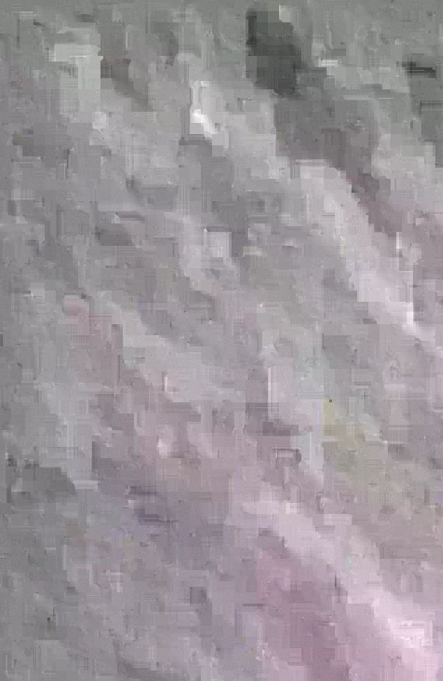
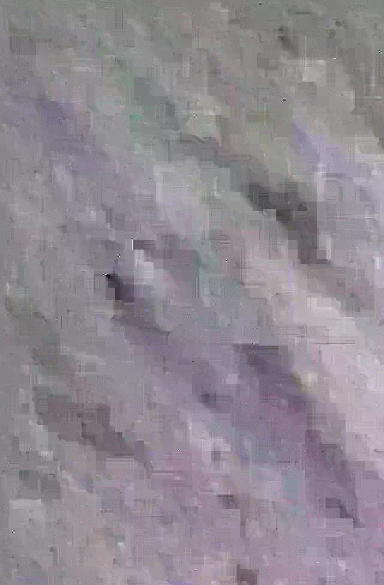
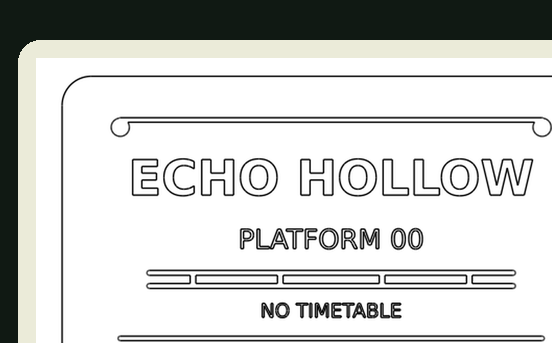
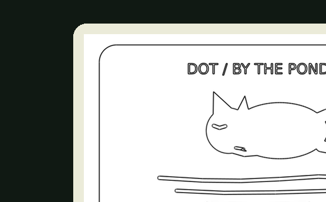

MAERD / ONE TICKET / TWO MARKS
The bird's
second mark.
Dot sleeps by the pond. The other side of the ticket sings. Four groups of calls. One word at the far end of the line.
The ticket has
two sides.


The first side names a place. The second keeps a small promise. KEEP BOTH SIDES ↗

01 / THE SOUND
The lower call falls. The higher call rises. A little silence follows every eighth note.
A low call means 0. A high one means 1. Eight calls make one letter.
READ THE CALLS / FOR THOSE WHO CANNOT HEAR THEM
01000100 01001111 01001111 01010010
Four eight-bit letters. Use ordinary ASCII. There is no deadline.
THE SECOND MARK
The first mark names a place. The second is a sound.
ONE OBJECT. ANOTHER LANGUAGE.
02 / THE OBJECT
Two sides. One ticket.
A station name, and Dot asleep beside the pond. Two faces to be printed and joined. Pino suggested both the sketch and the singing bird. Maerd chose to keep them together.




The raised print pieces use simpler reliefs of the illustrated paper ticket. The QR card opens this song; the plastic contains no sound electronics.